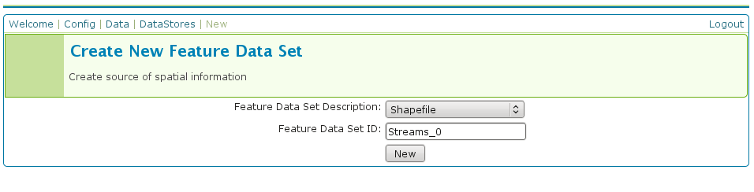
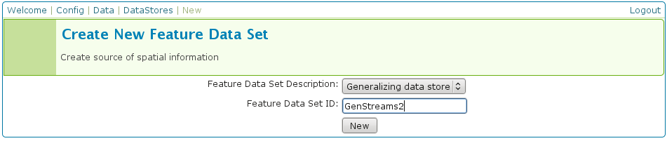
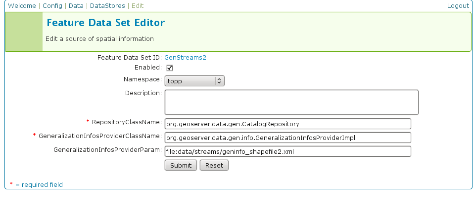
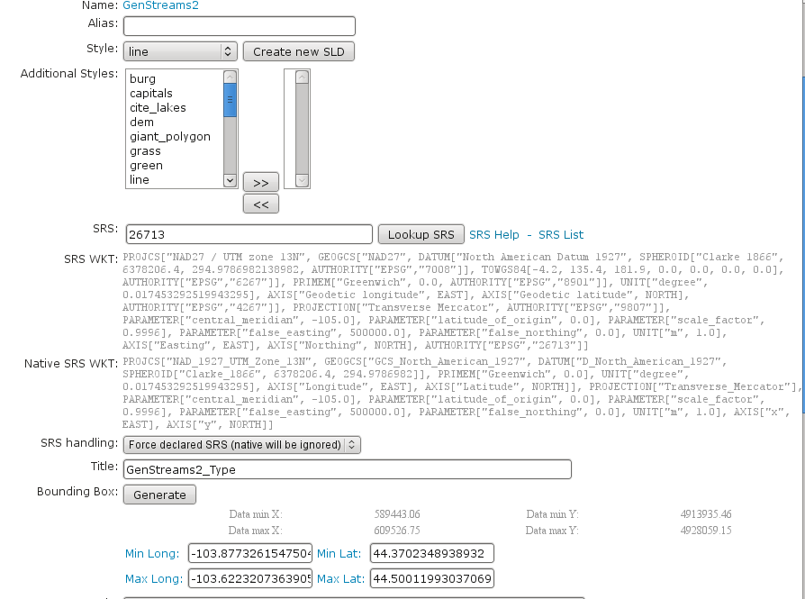

Using the GeoTools feature-pregeneralized module¶
Warning
The screenshots on this tutorial have not yet been updated for the 2.0.x user interface. But most all the rest of the information should be valid, and the user interface is roughly the same, but a bit more easy to use.
Introduction¶
This tutorial shows how to use the geotools feature-pregeneralized module in GeoServer. The feature-pregeneralized module is used to improve performance and lower memory usage and IO traffic.
Note
Vector generalization reduces the number of vertices of a geometry for a given purpose. It makes no sense drawing a polygon with 500000 vertices on a screen. A much smaller number of vertices is enough to draw a topological correct picture of the polygon.
This module needs features with already generalized geometries, selecting the best fit geometry on demand.
The full documentation is available in GeoTools Pregeneralized Plugin documentation.
This tutorial will show two possible scenarios, explaining step by step what to do for using this module in GeoServer.
Getting Started¶
First, find the location of the GEOSERVER_DATA_DIR. This info is contained in the log file when starting GeoServer.:
----------------------------------
- GEOSERVER_DATA_DIR: /home/mcr/geoserver-1.7.x/1.7.x/data/release
----------------------------------
Within this directory, we have to place the shape files. There is already a sub directory data which will be used.
Within this sub directory, create a directory streams.
Within GEOSERVER_DATA_DIR/data/streams create another sub directory called 0. ( 0 meaning “no generalized geometries”).
This tutorial is based on on a shape file, which you can download from here Streams.
Unzip this file into GEOSERVER_DATA_DIR/data/streams/0.
Look for the WEB-INF/lib/ directory of your GeoServer installation. There must be a file called gt-feature-pregeneralized-version-jar. This jar file includes a tool for generalizing shape files. Open a cmd line and execute the following:
cd <GEOSERVER_DATA_DIR>/data/streams/0
java -jar <GEOSERVER_INSTALLATION>/WEB-INF/lib/gt-feature-pregeneralized-{version}.jar generalize 0/streams.shp . 5,10,20,50
You should see the following output:
Shape file 0/streams.shp
Target directory .
Distances 5,10,20,50
% |################################|
Now there are four additional directories 5.0 , 10.0 , 20.0 , 50.0 . Look at the size of files with the extension shp within these directories, increasing the generalization distance reduces the file size.
Note
The generalized geometries can be stored in additional properties of a feature or the features can be duplicated. Mixed variations are also possible. Since we are working with shape files we have to duplicate the features.
There are two possibilities how we can deploy our generalized shape files.
Deploy hidden (not visible to the user)
Deploy each generalized shape file as a separate GeoServer feature

Public Deployment¶
First we have to configure all our shape files
The Feature Data Set ID for the other shape files is
Streams_5
Streams_10
Streams_20
Streams_50
The URL needed for the other shape files
file:data/streams/5.0/streams.shpfile:data/streams/10.0/streams.shpfile:data/streams/20.0/streams.shpfile:data/streams/50.0/streams.shp
Each feature needs an Alias, here it is streams_0. For the other shape files use
streams_5
streams_10
streams_20
streams_50
Check the result by pressing My GeoServer, Demo and Map Preview. You should see your additional layers.
No we need another XML configuration file
<?xml version="1.0" encoding="UTF-8"?>
<GeneralizationInfos version="1.0">
<GeneralizationInfo dataSourceNameSpace="topp" dataSourceName="Streams_0" featureName="GenStreams2" baseFeatureName="streams" geomPropertyName="the_geom">
<Generalization dataSourceNameSpace="topp" dataSourceName="Streams_5" distance="5" featureName="streams" geomPropertyName="the_geom"/>
<Generalization dataSourceNameSpace="topp" dataSourceName="Streams_10" distance="10" featureName="streams" geomPropertyName="the_geom"/>
<Generalization dataSourceNameSpace="topp" dataSourceName="Streams_20" distance="20" featureName="streams" geomPropertyName="the_geom"/>
<Generalization dataSourceNameSpace="topp" dataSourceName="Streams_50" distance="50" featureName="streams" geomPropertyName="the_geom"/>
</GeneralizationInfo>
</GeneralizationInfos>
Save this file as geninfo_shapefile2.xml into GEOSERVER_DATA_DIR/data/streams.
Create the pregeneralized datastore
Now we use the CatalogRepository class to find our needed data stores
Last step
In the Map Preview you should find topp:GenStreams2 and all other generalizations. Test in the same manner we discussed in the hidden deployment and you should see something like this in the GeoServer log:
May 20, 2009 6:11:06 PM org.geotools.data.gen.PreGeneralizedFeatureSource logDistanceInfo
INFO: Using generalizsation: Streams_20 streams the_geom 20.0
May 20, 2009 6:11:08 PM org.geotools.data.gen.PreGeneralizedFeatureSource logDistanceInfo
INFO: Using generalizsation: Streams_10 streams the_geom 10.0
May 20, 2009 6:11:12 PM org.geotools.data.gen.PreGeneralizedFeatureSource logDistanceInfo
INFO: Using generalizsation: Streams_10 streams the_geom 10.0
Conclusion¶
This is only a very simple example using shape files. The plugin architecture allows you to get your data and generalizations from anywhere. The used dataset is a very small one, so you will not feel a big difference in response time. Having big geometries (in the sense of many vertices) and creating maps with some different layers will show the difference.